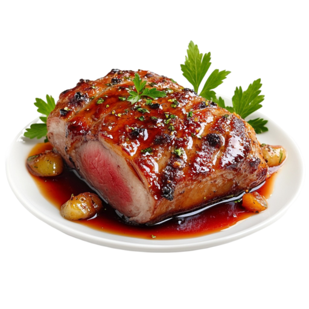

Ce que j’ai testé et aimé
Soupes & veloutés
Entrées, quiches & cakes
Poissons & accompagnements

Viandes & accompagnements
Légumes ou préparations végétariennes
Desserts
Marinades
Jus de fruits
 Soupes & veloutés
Soupes & veloutés Entrées, quiches & cakes
Entrées, quiches & cakes Poissons & accompagnements
Poissons & accompagnements Jus de fruits
Jus de fruits